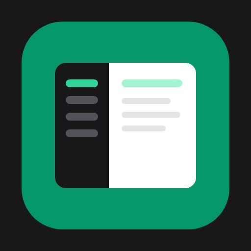
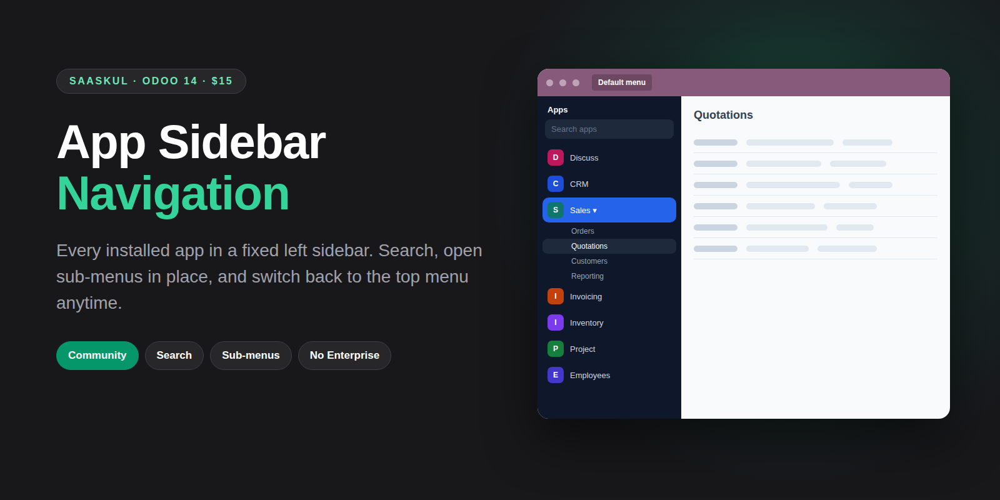

A permanent left sidebar for Odoo 19 Community. Every installed app and its menus in one place, with search and expandable sub-menus. No web_enterprise needed.

In Odoo Community you switch apps from a small dropdown and then pick a menu from the top bar. This app keeps every app and its menus visible on the left.
✗ Two clicks to reach another app
✗ Only the current app's menus are visible
✗ No way to search for a menu item
✗ Long app lists are hard to scan
✓ Every app one click away on the left
✓ Sub-menus open right under the app
✓ Search box finds apps and menu items
✓ Colored letter tiles make apps easy to spot
Read from the user's own menu, so each user sees only the apps they have access to.
Expand an app to see its menus, and open deeper menu groups in place without leaving the sidebar.
Type to filter. Apps whose name or menu items match stay visible and open automatically.
The app you are working in is highlighted and expanded, and the open menu item is marked.
One click in the top bar or the user menu brings back the standard Community menu bar.
Depends only on the web module. It does not use or copy any web_enterprise code.
Install the app. The sidebar appears for every user after the page reloads.
Click an app to open it. Click its arrow to just expand the menus.
Type in Search apps to find an app or a menu item by name.
Press Default menu to use the top bar. Reloading the page brings the sidebar back.
Odoo 19.0 Community
Required module: web (always installed)
app_sidebar_saaskul
License OPL-1 · Author Saaskul
No. It is built for Odoo 19 Community and does not depend on web_enterprise.
No. The sidebar is built from the same menu data Odoo already loads for that user.
Yes. Use the Default menu button in the top bar or in the user menu. Uninstalling the app removes the sidebar completely.
No. There are no settings. Install it and reload the page.
App Sidebar Navigation is published for Odoo 14 and Odoo 19. Running Odoo 15, 16, 17 or 18? We port it to your version. Message us on WhatsApp or email.
WhatsApp +971 56 256 8128 info.cpabooks@gmail.comQuestions before you buy, or need it on another Odoo version? The Saaskul team replies on WhatsApp and email.
info.cpabooks@gmail.com